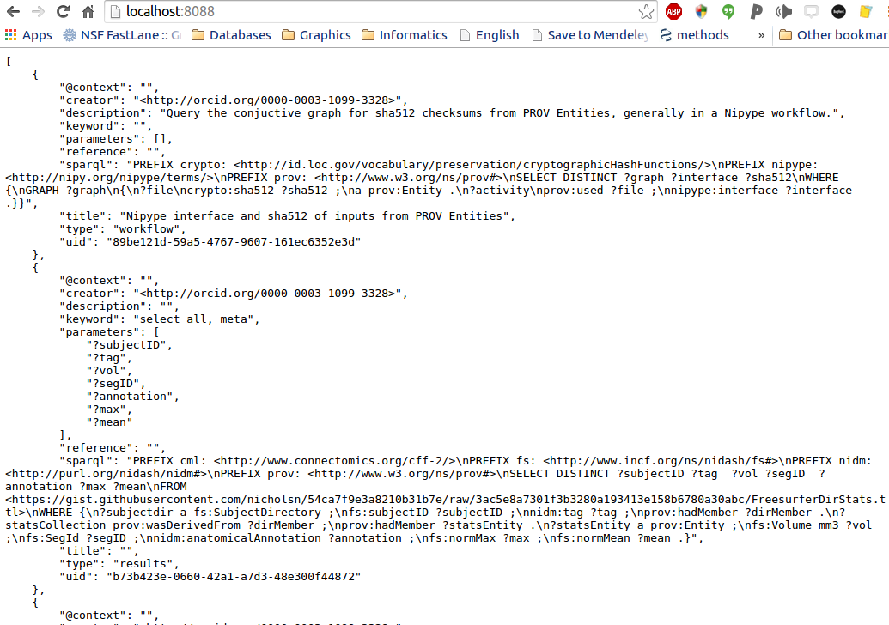
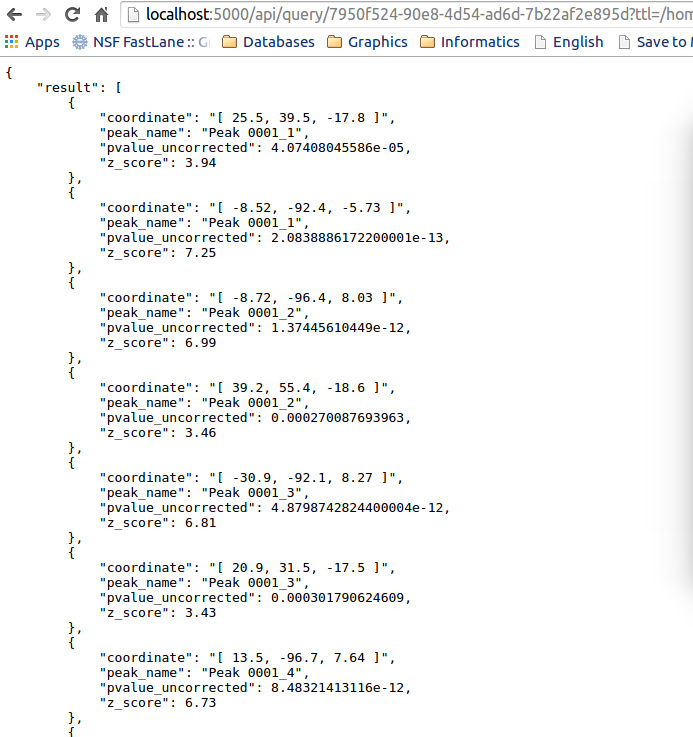
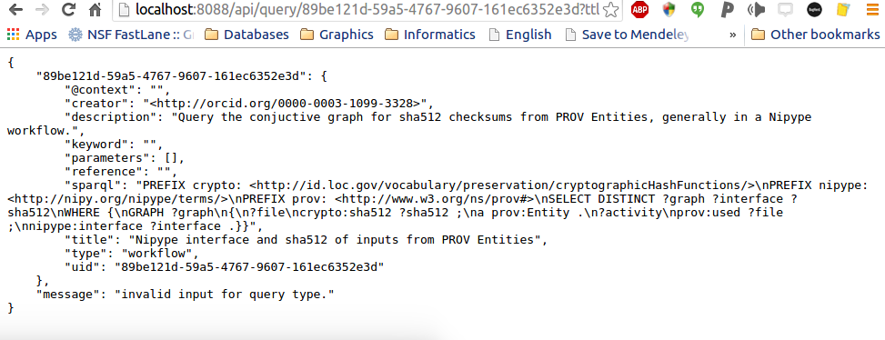

Getting Started¶
You have three options for using the nidm-api: as a local REST API, a REST API (served to the world on a public server), or as modules (to integrate into your python applications).
Local Machine REST API¶
When you install the module, an executable, “nidm” is placed into your system or local bin (it will tell you the location upon installation). If this bin is added to your path, you can start the server:
nidm
Then open your browser to localhost:8088. The index view that you see is a complete list of validated queries, for example:
The available queries must pass through validation to be available (not yet implemented). The queries are organized by their uid, which is just the name of the json file that is found in the nidm-query repo. You can contribute to this repo if you want to make a new query, and tools will be developed for you to generate these data structures in a graphical interface. The “type” variable in the returned json is generated dynamically, and corresponds to the folder name in nidm-query repo. We currently support “results,” “experiment,” and “workflow,” as these are the different kinds of NIDM data structures that are being developed.
The first thing you might want to do is retrieve all the meta data for a single query. This means that we will look at the list in the photo above, and find the uid of one that we like. We can then ask to see a single query:
http://localhost:8088/api/7950f524-90e8-4d54-ad6d-7b22af2e895d
You might then have a turtle file that you want to actually run a query on. For example, if you look in the nidm-api examples directory, we have provided a nidm.ttl file that corresponds to a NIDM-Results folder. We can run the query we just saw above to get coordinates:
http://localhost:8088/api/query/7950f524-90e8-4d54-ad6d-7b22af2e895d?ttl=/home/vanessa/Desktop/nidm.ttl
The only difference is that we’ve added the “query” to the URL, and specified the ttl file as a variable, indicated by the ”?” at the end of the URL. We will eventually give you more options to customize your query, for now that’s it. When you do the query, your result will be returned again in json:
Note that I gave the REST API a local path on my computer. We can also give it a URL and it will work.
http://localhost:8088/api/query/7950f524-90e8-4d54-ad6d-7b22af2e895d?ttl=https://rawgithub.com/incf-nidash/nidm-api/master/example/nidm.ttl
Boum.
If you screw something up, meaning that the query did not work for any reason (e.g., you gave it a wrong file, improperly formatted file, or the query logic has an error), it will tell you:
Note that the current (tiny) set of queries is currently not being validated, and they need work and contribution.
REST API on Server¶
You can use something like gunicorn to run the flask application on a server, for the world to use. More documentation on how to do this will come, as we currently do not have a server to host this. Please be aware that the debug mode in the Flask application is set to True, and you should `read about <http://flask.pocoo.org/docs/0.10/deploying/ >`_ the proper way to deploy a flask application before doing something that might compromise the security of your server.
Integration into Python¶
An example turtle file is provided in the “example” directory of the repo, and running a query on this file from within python is shown below:
#!/usr/bin/python
from nidm.query import get_query_directory, validate_queries, make_lookup, do_query
# Get updated queries, validate, and generate a lookup dict:
query_dir = get_query_directory()
query_json = validate_queries(query_dir)
query_dict = make_lookup(query_json,key_field="uid")
# Let's use the query to get coordinates
qid = "7950f524-90e8-4d54-ad6d-7b22af2e895d"
# Here is a ttl file that I want to query, nidm-results
ttl_file = "nidm.ttl"
result = do_query(ttl_file=ttl_file,query=query_dict[qid]["sparql"])
# The result is a pandas data frame. I can turn it into other things too
result = result.to_dict(orient="records")